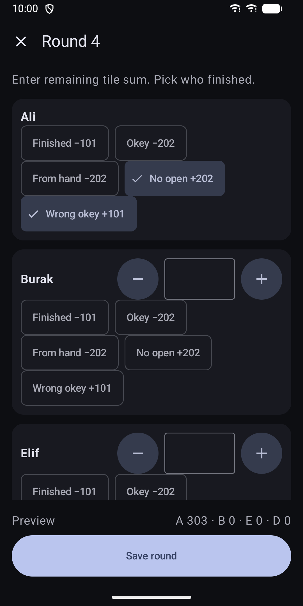
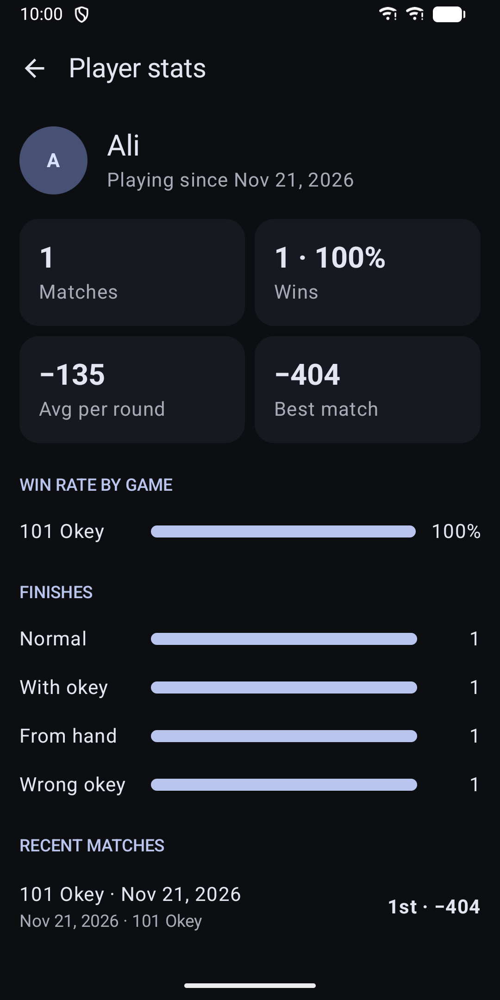

Contador de Okey: 101 Okey
Puntos de 101 Okey y Okey: penalizaciones, historial, estadísticas y widget.





Acerca de la app
Lleva la puntuación en la mesa de Okey sin papel. Okey Score Counter puntúa 101 Okey y Okey estándar para 2 a 4 jugadores, en individual o por parejas (eşli). La app está disponible en español, inglés y turco. PUNTUACIÓN - Elige 101 Okey u Okey, individual o por parejas. - Anota cada ronda: la suma de fichas que quedan y quién terminó. - Con un toque: terminar con okey, terminar desde la mano, sin abrir y descarte erróneo de okey o comodín. - Una vista previa muestra la ronda antes de guardarla. - Lidera el total más bajo, con una marca de líder en el marcador. CORREGIR ERRORES - Edita cualquier ronda anterior y todos los totales se recalculan. - Deshaz una ronda y restáurala si cambias de opinión. - Cambia las penalizaciones de una partida y se recalculan todas las rondas. - Las reglas por defecto se pueden editar. Las partidas existentes conservan sus propias reglas. HISTORIAL Y ESTADÍSTICAS - Cada partida se guarda en el historial, con búsqueda y filtro por juego. - Las estadísticas del jugador muestran partidas, victorias, porcentaje de victorias por juego, media por ronda, mejor partida, cierres y okeys erróneos. COMPARTIR - Comparte el marcador como texto o como imagen. - Tú eliges qué se incluye: la tabla de rondas, y nombres reales o Jugador 1, 2 y así sucesivamente. WIDGET - Un widget en la pantalla de inicio muestra los totales de la partida actual. Tócalo para abrir el marcador. PRIVACIDAD - Sin cuenta, sin analíticas, sin seguimiento. - La app no tiene permiso de internet. Tus datos se quedan en tu teléfono. - La app está excluida de la copia de seguridad en la nube y de la transferencia entre dispositivos. - Puedes borrar una partida o todos los datos desde la app. COMODIDAD - Tema claro y oscuro, según el ajuste del sistema. - Diseños para teléfonos y tabletas. - Etiquetas para lectores de pantalla y zonas táctiles grandes. COMPRA La app es una descarga de pago en Google Play. No tiene compras dentro de la app ni suscripciones, y todas las funciones indicadas están incluidas.